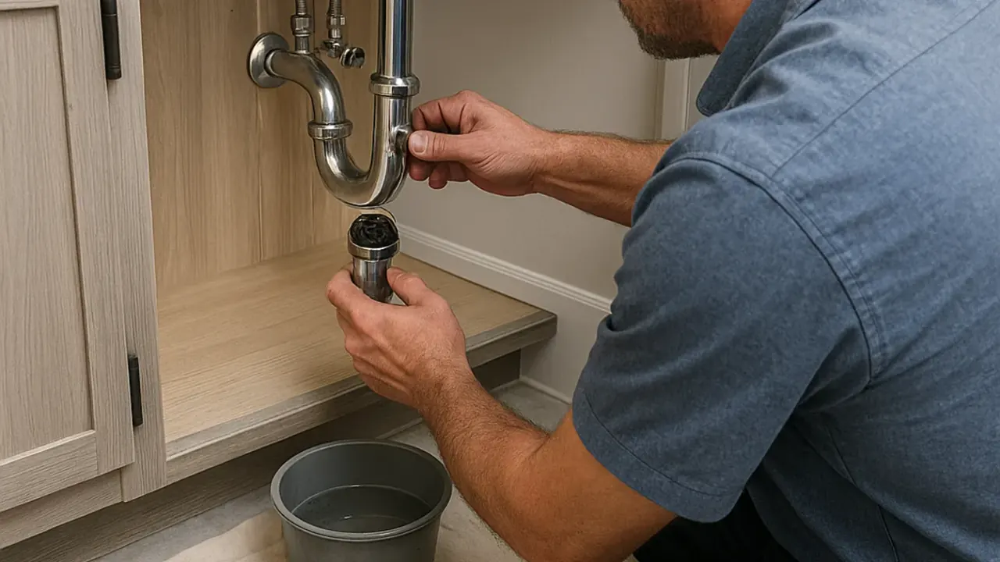

We offer same-day service in La Mesa, with emergency plumbing available 24/7 to address urgent issues promptly.
Your local La Mesa Plumber in California team
Plumber in La Mesa, California
From a dripping tap to a full sewer repair, our La Mesa plumbers cover the jobs homes and businesses here actually call about. La Mesa sits on the coast (San Diego County), where salt air and damp weather wear on exposed pipework — the kind of local wear our technicians check for on every visit. Our route covers La Mesa ZIPs including 91941, 91942 and 91943 — if yours is not listed, call and we will confirm. Our La Mesa work takes us past La Mesa Depot and Lake Murray Park and through neighbourhoods like La Mesa Village and Grossmont on most weeks. Whether it is residential plumbing, commercial plumbing or drain cleaning, the same crew handles it, with a written estimate before work begins.
We work across La Mesa Village, Grossmont, Lake Murray and San Carlos, and the ZIP codes we visit most often are 91941, 91942, 91943 and 91944. Homes outside those ZIP codes are usually covered too — the dispatcher confirms coverage when you call, so there is no need to guess. La Mesa Depot and Lake Murray Park are the landmarks our crew uses to find its way around, so mentioning one when you book saves time on the day.
In La Mesa (San Diego County), the sea sets the terms for plumbing on the coast. Salt in the air works on every exposed fitting, and the fog that drifts in most mornings keeps crawl spaces and cupboards damp, so a slow leak can run for months before anyone notices it. Coastal water is moderately hard in most districts. It leaves scale in kettles and showerheads over a few years and shortens a water heater's life if the heater is never flushed — a gentler problem than Valley groundwater, but a real one. That shapes every visit: the first thing our technician checks on a visit here is the exposed metalwork — outdoor taps, heater connections and any fitting in the sea air — because that is where coastal corrosion shows up first.
Local ExperienceYears serving La Mesa
24/7Emergency response
4.9 starCustomer satisfaction
Plumbing questions · La Mesa
Choosing a plumber
Services available in La Mesa
Plumbing Services Available in La Mesa
Every service below runs in La Mesa. The descriptions are written for this city, not copied from a catalogue: the faults, the materials and the methods are the ones this area actually needs.
 Emergency Plumbing ServicesBurst pipe, overflowing toilet, sudden leak: in La Mesa the emergency crew answers around the clock and arrives ready for the local faults — coastal air included.See details →
Emergency Plumbing ServicesBurst pipe, overflowing toilet, sudden leak: in La Mesa the emergency crew answers around the clock and arrives ready for the local faults — coastal air included.See details → Residential PlumbingEveryday plumbing for La Mesa homes — repairs, replacements and upkeep, with the pipe materials and water conditions of La Mesa already understood.See details →
Residential PlumbingEveryday plumbing for La Mesa homes — repairs, replacements and upkeep, with the pipe materials and water conditions of La Mesa already understood.See details → Commercial PlumbingReliable plumbing for La Mesa businesses, with written estimates, work that fits the working day, and priority call-outs when a fault would close the premises.See details →
Commercial PlumbingReliable plumbing for La Mesa businesses, with written estimates, work that fits the working day, and priority call-outs when a fault would close the premises.See details →
Drain CleaningDrain clearing for La Mesa homes and businesses — the right tool for grease, hair, scale and root intrusion, whatever the local cause.See details → Sewer Line RepairSewer line repair in La Mesa, including no-dig options where the line allows it, with the repair tested before sign-off.See details →
Sewer Line RepairSewer line repair in La Mesa, including no-dig options where the line allows it, with the repair tested before sign-off.See details → Water Heater Repair & InstallationRepair and replacement of tank and tankless heaters in La Mesa, with honest advice on repair versus replace — and on the scale this water leaves behind.See details →
Water Heater Repair & InstallationRepair and replacement of tank and tankless heaters in La Mesa, with honest advice on repair versus replace — and on the scale this water leaves behind.See details → Leak Detection & RepairA damp patch, a rising bill, a hiss behind a wall: leak detection in La Mesa that finds the leak before it finds your floor.See details →
Leak Detection & RepairA damp patch, a rising bill, a hiss behind a wall: leak detection in La Mesa that finds the leak before it finds your floor.See details → Sump Pump & Pipe Leak RepairFlood protection for low-lying rooms in La Mesa — pump testing, repairs and discharge-line checks before the wet season arrives.See details →
Sump Pump & Pipe Leak RepairFlood protection for low-lying rooms in La Mesa — pump testing, repairs and discharge-line checks before the wet season arrives.See details → Toilet Repair & InstallationToilet repair and installation across La Mesa, from worn cisterns to full suite replacements, with the old unit taken away.See details →
Toilet Repair & InstallationToilet repair and installation across La Mesa, from worn cisterns to full suite replacements, with the old unit taken away.See details → Kitchen plumbingFrom blocked kitchen drains to new tap and dishwasher installs, kitchen plumbing for homes across La Mesa.See details →
Kitchen plumbingFrom blocked kitchen drains to new tap and dishwasher installs, kitchen plumbing for homes across La Mesa.See details →
Who we serve in La Mesa
Two very different jobs. One local crew.
Residential Plumbing Services
Home plumbing in La Mesa is mostly about the house you live in: its age, its pipes, its water. We read all three before quoting, so the repair fits the home rather than the other way round.
Leak detection and repair
We find hidden leaks with listening and pressure checks, then repair the failed section and test the line.
Water heater installation
New water heaters fitted and tested, sized for the household and installed with proper venting and safety checks.
Drain cleaning services
Kitchen, bathroom and main drains cleared with the right tool, then flow-tested so the blockage stays gone.
Toilet repair and installation
From worn cisterns to cracked bowls, we repair toilets properly — or fit a new one and take the old unit away.
- Same-day slots for urgent home plumbing problems.
- Practical tips from the technician on avoiding repeat faults.
- Prices agreed upfront, so the final bill holds no surprises.
Commercial Plumbing Services
For a business in La Mesa, plumbing is about uptime. We schedule around your trading hours, keep disruption to a minimum, and leave written records of everything that was done.
- Restaurants
- Retail stores
- Office buildings
- Medical facilities
- Educational institutions
Fast response times
Urgent faults get priority slots, so a burst pipe or backup costs your business hours, not days.
Customized plumbing solutions
Service plans built around the property — its size, its hours, and the equipment it depends on.
Preventative maintenance plans
Scheduled checks catch worn parts and slow leaks before they shut a restroom or a kitchen down.
Expertise in local regulations
Work is done to local code, with the right materials and safety devices, and the paperwork kept in order.
Service by service in La Mesa
Every service we run in La Mesa.
Each service below is a full breakdown of how the work is scoped, priced and carried out in this city — not a generic description.
Emergency Plumbing ServicesResidential PlumbingCommercial PlumbingDrain CleaningSewer Line RepairWater Heater Repair & InstallationLeak Detection & RepairSump Pump & Pipe Leak RepairToilet Repair & InstallationKitchen plumbing
01
Emergency Plumbing Services
Emergency Plumbing Services
When you need a plumber in California, our emergency plumbing services are available 24/7. Whether it's a burst pipe or a clogged drain, we respond quickly to restore your plumbing system. Our experienced team understands the local plumbing challenges, ensuring timely and effective solutions to prevent further damage.
Rapid Response for Emergencies
Our emergency plumbing services ensure a quick response to urgent issues. We understand that plumbing disasters can happen at any time, and our team is ready to tackle them swiftly.
Expert Diagnosis and Repair
With years of experience, our plumbers accurately diagnose problems and implement effective repairs. From leaks to sewer backups, we handle it all, ensuring your plumbing is restored efficiently.
Preventive Measures for Future Issues
After resolving your emergency, we provide advice on preventive measures. Our goal is to help you avoid future plumbing crises, especially in La Mesa's unique climate and infrastructure.
- 24/7 emergency plumbing services available.
- Fast response times to urgent plumbing issues.
- Thorough diagnosis and effective repairs.
- Preventive advice to avoid future emergencies.
02
Residential Plumbing
Residential Plumbing
For reliable residential plumbing in La Mesa, our expert plumbers are here to help. We understand the unique plumbing needs of homes in this area, from older structures to modern builds. Our comprehensive services ensure your home's plumbing operates smoothly and efficiently.
Comprehensive Plumbing Services
Our residential plumbing services cover everything from installations to repairs. Whether you need a new faucet or a complete bathroom remodel, we cater to all your plumbing needs in La Mesa.
Quality Workmanship Guaranteed
We pride ourselves on delivering high-quality workmanship. Our skilled plumbers use the best materials and techniques, ensuring your plumbing systems are durable and reliable for years to come.
Local Expertise and Knowledge
With extensive experience in La Mesa, we understand local plumbing codes and regulations. This knowledge allows us to provide compliant and efficient plumbing solutions tailored to your home.
- Full range of residential plumbing services.
- High-quality workmanship with durable materials.
- Expert knowledge of local plumbing codes.
- Timely service to minimize disruption to your home.
03
Commercial Plumbing
Commercial Plumbing
Our commercial plumbing in La Mesa offers tailored solutions for businesses of all sizes. We understand that plumbing issues can disrupt operations, so we provide efficient and reliable services to keep your business running smoothly.
Tailored Solutions for Businesses
We offer commercial plumbing services designed to meet the specific needs of your business. From restaurants to retail stores, our team has the expertise to handle diverse plumbing systems.
Minimizing Downtime for Operations
Our goal is to minimize downtime during plumbing repairs or installations. We work around your schedule, ensuring that your business operations can continue with minimal interruptions.
Regular Maintenance Programs
We provide regular maintenance programs to keep your plumbing systems in optimal condition. This proactive approach helps prevent costly repairs and ensures compliance with local regulations.
- Custom plumbing solutions for various businesses.
- Efficient service to minimize operational downtime.
- Regular maintenance programs for plumbing systems.
- Expertise in local commercial plumbing codes.
04
Drain Cleaning
Drain Cleaning
For effective drain cleaning in La Mesa, our expert plumbers utilize advanced techniques to clear clogs and restore flow. We understand the common issues faced by residents, ensuring your drains function properly and efficiently.
Advanced Drain Cleaning Techniques
We use state-of-the-art equipment for drain cleaning services. Our methods effectively remove blockages caused by debris, grease, and tree roots, ensuring smooth drainage.
Regular Maintenance for Drains
Regular drain cleaning can prevent major plumbing issues. We recommend maintenance services to keep your drains clear and functioning, especially in La Mesa's older neighborhoods.
Emergency Drain Services Available
In case of severe clogs, our emergency drain cleaning services are just a call away. We respond quickly to restore your plumbing and prevent further damage.
- State-of-the-art equipment for effective cleaning.
- Preventive maintenance options for drains.
- Emergency services for severe clogs available.
- Expert plumbers with local knowledge.
05
Sewer Line Repair in La Mesa
Sewer Line Repair in La Mesa
When you need sewer line repair in La Mesa, our experienced team is ready to help. We understand the complexities of sewer systems in the area and provide reliable solutions to restore proper function and prevent future issues.
Comprehensive Sewer Line Inspections
We conduct thorough inspections of sewer lines using advanced technology. This allows us to identify issues early and determine the best repair options for your property in La Mesa.
Trenchless Repair Options Available
Our trenchless sewer line repair techniques minimize disruption to your property. This innovative approach allows us to repair pipes without extensive digging, saving time and costs.
Preventive Maintenance for Sewer Lines
We offer preventive maintenance services to keep your sewer lines in top condition. Regular check-ups can help avoid costly repairs and ensure compliance with local regulations.
- Thorough inspections using advanced technology.
- Trenchless repair options to minimize disruption.
- Preventive maintenance to avoid future issues.
- Experienced team familiar with local sewer systems.
06
Water Heater Repair & Installation in La Mesa
Water Heater Repair & Installation in La Mesa
For water heater repair & installation in La Mesa, our skilled plumbers provide reliable service tailored to your needs. We understand the importance of hot water in your home and ensure your system operates efficiently.
Expert Water Heater Repairs
Our team specializes in diagnosing and repairing water heaters of all types. Whether it's a minor issue or a major malfunction, we ensure your hot water supply is restored promptly.
Professional Installation Services
When it's time for a new water heater, we offer professional installation services. We help you choose the right model for your home, ensuring optimal performance and energy efficiency.
Regular Maintenance for Longevity
We recommend regular maintenance for your water heater to extend its lifespan. Our team provides thorough inspections and service to keep your system running smoothly in La Mesa.
- Reliable repairs for all water heater types.
- Professional installation tailored to your needs.
- Regular maintenance to extend water heater lifespan.
- Expert advice on energy-efficient models.
07
Leak Detection & Repair in La Mesa
Leak Detection & Repair in La Mesa
For effective leak detection & repair in La Mesa, our skilled plumbers utilize advanced technology to identify and fix leaks quickly. We understand the potential damage leaks can cause, ensuring your home remains safe and dry.
Advanced Leak Detection Technology
We use cutting-edge technology for leak detection services. This allows us to identify hidden leaks without invasive methods, preserving your property's integrity.
Prompt and Efficient Repairs
Once a leak is detected, our team acts quickly to repair it. We understand the urgency of leak issues and provide effective solutions to prevent further damage.
Preventive Measures to Avoid Future Leaks
After repairs, we offer advice on preventive measures to avoid future leaks. Our goal is to keep your plumbing system in optimal condition, especially in La Mesa's unique climate.
- Cutting-edge technology for leak detection.
- Quick response times for leak repairs.
- Preventive advice to avoid future leaks.
- Experienced plumbers familiar with local conditions.
08
Sump Pump & Pipe Leak Repair in La Mesa
Sump Pump & Pipe Leak Repair in La Mesa
For sump pump & pipe leak repair in La Mesa, our expert team is dedicated to keeping your home dry and safe. We understand the importance of functioning sump pumps, especially in areas prone to flooding.
Reliable Sump Pump Services
Our sump pump repair and installation services ensure your system operates effectively. We assess your needs and recommend the best solutions to protect your home from water damage.
Expert Pipe Leak Repairs
We specialize in repairing pipe leaks quickly and efficiently. Our team uses advanced techniques to locate and fix leaks, preventing further damage to your property.
Preventive Maintenance for Sump Pumps
Regular maintenance of your sump pump is crucial. We offer comprehensive check-ups to ensure your system is ready to handle heavy rains, especially in La Mesa's climate.
- Expert repair and installation of sump pumps.
- Quick and efficient pipe leak repair services.
- Preventive maintenance options for sump pumps.
- Experienced team familiar with local conditions.
09
Toilet Repair & Installation in La Mesa
Toilet Repair & Installation in La Mesa
For toilet repair & installation in La Mesa, our skilled plumbers provide prompt and reliable service. We understand how essential a functioning toilet is to your home, and we ensure your needs are met efficiently.
Comprehensive Toilet Repair Services
We offer a full range of toilet repair services, from fixing leaks to addressing flushing issues. Our team works quickly to restore your toilet's functionality.
Professional Toilet Installations
When it's time for a new toilet, we provide professional installation services. We help you choose the right model and ensure it's installed correctly for optimal performance.
Regular Maintenance for Longevity
Regular maintenance can extend the life of your toilet. We offer check-ups and service to ensure your toilet operates efficiently and reliably in La Mesa.
- Full range of toilet repair services available.
- Professional installation of new toilets.
- Regular maintenance options for toilets.
- Quick response times for all toilet issues.
10
Kitchen plumbing in La Mesa
Kitchen plumbing in La Mesa
For expert kitchen plumbing in La Mesa, our experienced team is ready to assist. We understand the unique plumbing needs of kitchens, ensuring your space is functional and efficient for cooking and entertaining.
Comprehensive Kitchen Plumbing Services
Our kitchen plumbing services cover everything from sink installations to appliance connections. We ensure that all fixtures are installed correctly and function seamlessly.
Efficient Drainage Solutions
We specialize in addressing kitchen drainage issues. Whether it's a clogged sink or slow drainage, our team provides effective solutions to keep your kitchen running smoothly.
Upgrades for Modern Kitchens
If you're renovating, we offer plumbing upgrades to enhance your kitchen's functionality. Our team can help you select and install modern fixtures that fit your style.
- Full range of kitchen plumbing services.
- Expert solutions for drainage issues.
- Upgrades for modern kitchen fixtures.
- Quick and reliable service tailored to your needs.
Plumbing questions · La Mesa
Plumbing emergencies
In a plumbing emergency, turn off the water supply and call us immediately. Our team is ready to respond 24/7 to minimize damage.
Turn off the main water shut-off straight away — it is usually near the water meter or where the main enters the house — then call us. Move valuables and electronics out of the water's path and do not touch any electrical fitting that has got wet. We run a 24/7 emergency service in La Mesa, so the call is answered at any hour.
More than a service list
How We Execute Plumbing Services in La Mesa
No two La Mesa jobs start the same way, because no two La Mesa properties are the same. The visit begins with the house itself: what it is made of, what runs through it, and how to reach it.
Aging plumbing infrastructure
Many homes in La Mesa have older plumbing systems that are prone to issues like leaks and corrosion. This can lead to frequent repairs and replacements.
How we help: We use modern techniques and materials to upgrade outdated systems, ensuring long-lasting solutions for our clients.
High water table in certain areas
In areas with a high water table, properties are more susceptible to flooding and sump pump failures, especially during heavy rains.
How we help: Our sump pump installations are designed to handle local conditions, providing reliable protection against flooding.
Local wildlife affecting plumbing
Rodents and other wildlife can damage plumbing systems, leading to leaks and clogs.
How we help: We offer comprehensive inspections and repairs to address wildlife-related plumbing issues, ensuring your home remains safe.
Coverage in La Mesa
Neighbourhoods and areas we serve in La Mesa
Plumbing does not respect neighbourhood boundaries, and neither does our route. The areas below are where our La Mesa work happens most often, and all ten services run in each of them — the job decides the method, not the postcode.
The ZIP codes we visit most often in La Mesa are 91941, 91942, 91943 and 91944. If yours is not listed, call anyway — the dispatcher checks coverage against the route rather than turning a job away on a postcode.
The neighbourhoods on our regular route are La Mesa Village, Grossmont, Lake Murray and San Carlos. Each has its own mix of homes — older houses near the centre, newer building further out — and the crew carries the parts and tools for both, so a visit does not depend on which side of town you live on.
When you book, it helps to mention a landmark: La Mesa Depot and Lake Murray Park are the reference points our crew uses to find its way around La Mesa. They are not offices or depots — just well-known places that make directions simple, especially for homes on streets where house numbers are hard to spot from the road.
What to have ready when you call: where the problem is, what you can see or hear, and where your main water shut-off is. If you have not found the shut-off yet, look for it before you need it in a hurry — knowing its location is the single most useful thing a homeowner in La Mesa can do, because it turns a burst pipe from a flood into a mop-up. A photo of the problem, sent when you book, helps the technician bring the right parts first time.
Know your home
Housing in La Mesa: what your pipes are made of — and why it matters
Ask a plumber in La Mesa what matters most on a first visit and the answer is usually the same: the age of the house and the material of its pipes. The two are linked, and knowing the link tells you what is likely to fail next.
Before the 1960s: galvanised steel and cast iron
The oldest homes in La Mesa usually still have galvanised steel supply pipes and cast-iron drains. Inside, galvanised steel corrodes and the bore narrows year by year: pressure falls, the water runs rust-coloured after a holiday, and in time a joint weeps or a section blocks. Cast-iron drains scale and crack the same way, and tree roots find them first. A repair buys time, but a house where pressure has dropped at every tap is usually ready for a planned repipe in copper or PEX.
1960s to 1980s: copper supply, plastic drains
Homes built in the 1960s, 70s and 80s in La Mesa are typically copper for supply and plastic for drains. Copper holds up well, though pinhole leaks from aggressive water and ageing soldered joints are not unusual. Watch the sewer lateral: even when the house is copper, the lateral to the street is often clay or cast iron, and roots exploit it. A camera survey settles it quickly.
1990s to 2000s: copper and early PEX
The 1990s and 2000s brought the first PEX and a lot more copper, with PVC drains throughout. PEX from this period is flexible and resistant to scale, which suits La Mesa well, but early fittings and manifolds deserve a look: a manifold with a slow weep is easy to miss behind a panel. Water heaters from this era are now reaching the end of their working life, so a heater check is worth doing even if the hot water still runs.
2010s onwards: PEX and CPVC
Homes built since the 2010s in La Mesa are mostly PEX or CPVC, often run from a central manifold that lets each fixture be isolated on its own. The pipe rarely fails; trouble usually starts at a fitting, a valve or an appliance connection. Tankless heaters are common in these homes too, and they need descaling on schedule — in hard-water country, skipping it is the fastest route to a cold shower.
How to tell what you have: look at an exposed pipe near the water heater or under a sink. Galvanised steel is dull grey, magnetic and joined with threads; copper is reddish-brown with soldered joints; PEX is flexible plastic, often red for hot and blue for cold; CPVC is rigid cream-coloured plastic.
What we check on a visit in La Mesa: the pipe material and its condition, water pressure at more than one tap, the water heater's age and anode, and every visible joint for weeping. The report is plain: what is fine, what needs watching, and what should be planned before it fails.
Local conditions
Water and climate in La Mesa: what local conditions do to your plumbing
The sea sets the terms for plumbing on the coast. Salt in the air works on every exposed fitting, and the fog that drifts in most mornings keeps crawl spaces and cupboards damp, so a slow leak can run for months before anyone notices it.
Coastal water is moderately hard in most districts. It leaves scale in kettles and showerheads over a few years and shortens a water heater's life if the heater is never flushed — a gentler problem than Valley groundwater, but a real one.
None of this is a reason to worry; it is a reason to maintain. In La Mesa the homes that cost their owners least are the ones where the heater is flushed yearly, the outdoor lines are checked before the hard season, and a small leak is fixed while it is still small.
In depth
The problems La Mesa homes face — in depth
Every city has a short list of faults that come up again and again. For La Mesa it is the five below, and each one has a cause you can understand, a fix that works, and a habit that prevents the next one.
Outdoor drains choked with sand
Why it happens in La Mesa: coastal grit builds up in yard drains and condensate lines, and the first sign is usually water pooling after rain.
How we fix it — and how to prevent the next one: We clear the drain and flush the line, then check the grates and traps that let coastal grit in. The first sign is usually water pooling after rain — by then the drain has been narrowing for months.
Leaks that hide in damp air
Why it happens in La Mesa: a slow drip under a coastal home can go unnoticed for months because everything down there is already damp.
How we fix it — and how to prevent the next one: We use listening gear and pressure checks to find the drip, then repair it and inspect the fittings the damp has been softening. Under a coastal home, everything is already damp — which is exactly why a slow leak can run for months unnoticed.
Low water pressure from corroded lines
Why it happens in La Mesa: internal rust narrows old galvanised pipes until showers run weak and taps slow to a trickle.
How we fix it — and how to prevent the next one: We measure pressure at more than one tap and inspect the corroded sections, then give you the repair price beside the repipe price. Internal rust narrows a pipe a little every year; the shower going weak is the late symptom, not the first.
Gutters and downspouts working overtime
Why it happens in La Mesa: sea storms dump a lot of water fast, and a blocked gutter sends it straight down the wall and into the foundations.
How we fix it — and how to prevent the next one: We clear the gutters and downspouts and check where the water actually goes, so the next storm runs away from the house instead of down the wall. A blocked gutter in a sea storm sends water straight into the foundations.
Outdoor showers and pool equipment
Why it happens in La Mesa: coastal homes often have outdoor showers and pool plumbing, and their exposed fittings corrode faster than indoor ones.
How we fix it — and how to prevent the next one: We replace the corroded fitting and check the rest of the exposed equipment, because coastal fittings age faster than indoor ones. A yearly look at the outdoor shower and pool lines catches the rust before it becomes a leak.
Reviews from La Mesa customers
Customer Reviews from La Mesa
4.9★★★★★verified reviews
★★★★★
“Pro Plumbing California provided exceptional service when I had a major leak. They were quick to respond and fixed the issue efficiently. Highly recommend!”
ER
Emily R.La Mesa Village
Verified★★★★★
“I had my water heater replaced, and the team was professional and knowledgeable. They explained everything clearly and finished the job on time.”
MT
Mark T.Grossmont
Verified★★★★★
“The drain cleaning service was outstanding! They arrived on time and solved my clog issue in no time. Very satisfied with the service.”
SL
Sarah L.Lake Murray
Verified
How a typical visit works
How We Handle Common Plumbing Jobs in La Mesa
Here is the shape of a normal visit for the jobs we see most — what the customer reports, what the technician does, and how the visit ends.
Water heater
The problem
No hot water or a leaking water heater
What we did
First the heater is tested — thermostat, element, anode and pressure — so the fault is known before any part is ordered. Repair and replacement are priced side by side, the chosen work is done, and the system is run up and checked for leaks.
The result
Hot water is back, the system is tested, and you know what was done and why — plus when the heater should next be serviced.
Drain clearing
The problem
Water draining slowly, or not at all
What we did
The drain is cleared with the tool that fits the blockage, then flow-tested at more than one fixture. If the camera shows roots or scale further down the line, that is reported with a price, not left to become the next call-out.
The result
The drain is clear and flow-tested, the cause is on record, and the follow-up — if one is needed — is priced before anyone leaves.
Sewer line repair
The problem
Backups, smells, or every drain slowing at once
What we did
A camera survey finds the exact fault first. The technician then explains the repair options in plain terms — including trenchless repair where possible — and the work only starts once the price is agreed in writing.
The result
The line is repaired and tested, the surface is restored as far as the job allows, and the written record covers what was found and what was done.
Early warning signs
Have us take a look →
Signs You Need a Plumber in La Mesa
01
Water stains on ceilings or walls
02
Low water pressure
03
Frequent clogs in drains
04
Running toilets
05
Unpleasant odors from drains
La Mesa problem patterns
Common Plumbing Problems in La Mesa
These are the faults La Mesa homes call about most, and each one has a local reason behind it: the water, the housing age, the trees, the seasons. The pattern is the point — it is what lets us prevent the next one.
01
Clogged drains due to tree roots
Why it happens: La Mesa's mature trees often have roots that infiltrate sewer lines, causing blockages.
Our approach: We use advanced drain cleaning techniques to remove roots and restore proper flow.
02
Leaky pipes in older homes
Why it happens: Many homes in La Mesa have aging plumbing systems that are prone to leaks and corrosion.
Our approach: We offer thorough inspections and use high-quality materials for repairs, ensuring long-lasting solutions.
03
Water heater failures
Why it happens: Hard water in La Mesa can lead to sediment buildup in water heaters, reducing efficiency.
Our approach: We provide regular maintenance and high-efficiency units to ensure reliable hot water supply.
04
Sewer backups during heavy rains
Why it happens: Heavy rainfall can overwhelm local sewer systems, leading to backups in homes.
Our approach: We recommend preventative measures and provide emergency services to address backups quickly.
Plumbing questions · La Mesa
Common problems & prevention
It's advisable to have your plumbing inspected at least once a year to catch potential issues early and maintain system efficiency.
Common signs include water stains, low water pressure, frequent clogs, and running toilets. Addressing these issues early can prevent costly repairs.
Clear starting points
Plumbing Pricing in La Mesa
In La Mesa, typical pricing for standard plumbing repairs runs $150 to $400, depending on the complexity of the job. The final figure depends on the service, the materials and whether it is an emergency call.
Same-day visits are available for urgent problems in La Mesa, and the emergency line runs through the night. Whatever the job, you get the price in writing first — that is the rule, not the exception.
01Type of service required
Different services have varying costs. For example, emergency plumbing can be more expensive due to the urgency and materials needed.
02Time of day
Services requested after hours may incur additional fees, especially for emergency calls, impacting the overall cost.
03Complexity of the job
More complex plumbing issues, such as sewer line repairs, typically require more time and specialized equipment, affecting pricing.
Plumbing questions · La Mesa
Costs & pricing
Average plumbing costs in La Mesa typically range from $150 to $500, depending on the service. Emergency repairs may be higher due to their urgent nature.
La Mesa through the year
How Seasons Affect Plumbing in La Mesa
Plumbing in La Mesa follows the year. The cards below are the seasonal pattern for this area — what each season does to the system, and the one job worth doing before it arrives.
Spring
Spring brings rain, which can lead to increased demand for drain cleaning services due to potential clogs from runoff.
Tip: Schedule a drain cleaning to prevent clogs before the rainy season peaks.
Summer
Hot summer months can strain plumbing systems, especially water heaters, leading to potential failures.
Tip: Consider a water heater inspection to ensure your system can handle increased demand.
Fall
As temperatures drop, homeowners may experience issues with frozen pipes, especially in uninsulated areas.
Tip: Ensure your pipes are insulated to prevent freezing and bursting during colder months.
Winter
Winter can lead to increased plumbing emergencies, such as burst pipes due to freezing temperatures.
Tip: Be proactive by checking your plumbing for vulnerabilities before winter arrives.
Local plumbing notes
Local Notes for La Mesa
Local conditions change what goes wrong and how often. These notes describe the area around La Mesa in general terms, so you know what to watch for.
- This area is in San Diego County.
- Salt air can speed up corrosion on exposed pipes, fittings and outdoor fixtures, so it is worth checking them for rust and wear.
- Damp sea air and occasional heavy rain can keep crawl spaces and outdoor plumbing damp; keep drainage and gutters clear around the home.
- Older homes near the coast often have ageing supply lines; a periodic check for small leaks helps catch problems early.
- Salt-laden air attacks unprotected metal, so pipe clips, brackets and outdoor fixtures deserve a look at least once a year.
- Low-lying streets near the shore can see standing water after heavy rain; make sure surface drains run away from the house, not towards it.
Wherever you are in California, the basics are the same — find the main water shut-off before you need it, consider a seismic shut-off valve, and do not let small leaks run.
Plumbing questions · La Mesa
Local water & water heaters
Yes. Salt in sea air speeds up corrosion on exposed brass and copper fittings, outdoor taps and water-heater connections, and damp fog keeps crawl spaces moist so slow leaks hide longer. We check exposed metalwork on every visit, and replacing a corroded fitting early is far cheaper than repairing the water damage it causes later.
A standard tank water heater typically lasts 8 to 12 years, and in La Mesa the local water is the deciding factor: scale shortens its life, so a heater that is flushed every year usually outlasts one that never is. Rust-coloured water, rumbling noises and falling hot-water pressure are the signs that replacement should be planned rather than left to fail.
Local problem patterns
Plumbing problems common on the California coast
The faults below are the ones La Mesa residents call about most. They follow from the local water, climate and housing, so they recur until the cause is dealt with — which is why each one gets a full treatment below.
- Outdoor drains choked with sand — coastal grit builds up in yard drains and condensate lines, and the first sign is usually water pooling after rain.
- Leaks that hide in damp air — a slow drip under a coastal home can go unnoticed for months because everything down there is already damp.
- Low water pressure from corroded lines — internal rust narrows old galvanised pipes until showers run weak and taps slow to a trickle.
- Gutters and downspouts working overtime — sea storms dump a lot of water fast, and a blocked gutter sends it straight down the wall and into the foundations.
- Outdoor showers and pool equipment — coastal homes often have outdoor showers and pool plumbing, and their exposed fittings corrode faster than indoor ones.
A quick annual look at outdoor taps, drains and gutters is the simplest defence — and it is the visit most coastal homeowners skip.
We know the route
Landmarks and Points of Interest in La Mesa
Everyone in La Mesa knows these places, which makes them handy for directions. They are reference points, not service locations — mention one when you book and the technician will find the house faster.
La Mesa Depot
La Mesa Depot is a well-known reference point in the area. Mentioning it when giving directions can help a visitor find the way to a home — it is not a service location or office.
Lake Murray Park
Lake Murray Park is a well-known reference point in the area. Mentioning it when giving directions can help a visitor find the way to a home — it is not a service location or office.
Primary La Mesa response zone
La Mesa service coverage
Is your ZIP on the route?
Our La Mesa route covers the ZIP codes below. Do not see yours? Nearby areas often qualify, so it is worth a quick call.
91941919429194391944
Popular neighborhoods
Check my address →
La Mesa Village · Grossmont · Lake Murray · San Carlos
Plumbing questions · La Mesa
Coverage & ZIP codes
Yes. Our regular route in La Mesa covers ZIP codes 91941, 91942, 91943 and 91944, and nearby areas usually qualify as well — give the dispatcher your ZIP code when you call and coverage will be confirmed before booking. We work across La Mesa Village, Grossmont, Lake Murray and San Carlos.
Outside La Mesa?
Nearby Cities We Serve
01Los AngelesLos Angeles is approximately 115 miles northwest of La Mesa, making it a common area for our service calls.↗02San DiegoSan Diego is just 10 miles to the west of La Mesa, and we frequently service clients in this bustling city.↗03San JoseSan Jose is about 420 miles northwest of La Mesa, but we are equipped to handle requests from this region as needed.↗04San FranciscoSan Francisco is around 460 miles northwest, but we can coordinate services for clients in this area.↗
Credentials on file
Trust and Compliance in La Mesa
Licenses
- California State Plumbing License
- Available on request
Certifications
- EPA Certification
- Environmental Protection Agency
Insurance
- State Farm
- $2M general liability
Local affiliations
- La Mesa Chamber of CommerceMember

La Mesa dispatch is ready
Need a Reliable Plumber in La Mesa?
One call is all it takes: the dispatcher confirms the visit and the price, and the technician arrives knowing the local faults in La Mesa.
Request La Mesa service
Send the details. We'll handle the next step.
Tell us what is happening and where in La Mesa you are. A dispatcher will call back to confirm the visit and the price.
La Mesa service hubLa Mesa, California+1 (619) 612-9370Open 24 hours · 7 days a week